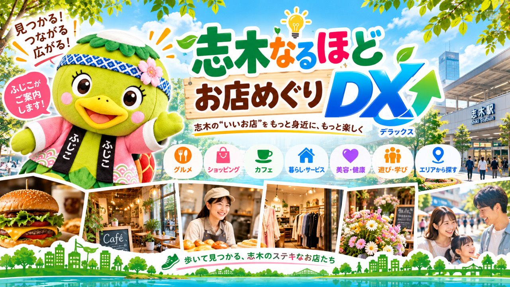

地域活動・情報発信・DX・動画制作
ハートネット志木
ふじこと届ける、志木の情報。
地域活動・お店の応援・空き家の情報発信。ふじこと一緒に、DXや動画で志木の魅力を届けます。
この活動を友だちにLINEで送る →

地域活動・情報発信・DX・動画制作
ふじこと届ける、志木の情報。
地域活動・お店の応援・空き家の情報発信。ふじこと一緒に、DXや動画で志木の魅力を届けます。
お気に入りを見つけて、街のお店へ。
ふじこグッズを少しずつ育てています。
この案内は掲載見本です。商品・価格・販売開始日・取扱いは準備中です。現在、両店での販売や在庫を案内するものではありません。
上記は開発候補です。商品画像・価格は、決まったものからご紹介します。
「ふじこグッズは、おうちcafeパン工房・ニュータイムス社でお買い求めいただけます」
販売開始後のご案内文の見本です。まずは、それぞれのお店をご紹介します。
国産小麦とホシノ天然酵母を使ったパンや焼き菓子を届けるパン工房。
お店の紹介・場所を見る →出版・広告代理・地域情報誌を通じて、地域の情報を届けています。
お店の紹介・場所を見る →企画・商品案内：ハートネット志木。取扱商品・販売条件は、準備が整い次第このページでお知らせします。

地域の人との交流を大切にしながら、志木の街や身近な活動の魅力を伝えます。
活動紹介用のイメージ
地域のお店や活動を紹介し、写真・動画や地域情報を通じて、その魅力を届けます。
活動紹介用のイメージ
空き家に関する話題や地域の住宅問題、活用について考えるきっかけとなる情報を、動画などで発信します。
活動紹介用のイメージ
地域の情報を見つけやすく、伝わりやすくするDXや動画を制作。志木の魅力や活動を届ける仕組みを育てます。
活動紹介用のイメージ画像を押すと大きく見られます。4枚は説明用のイメージです。実際の店舗・人物・物件を撮影した写真ではありません。
地域活動・お店の応援・空き家の情報発信・DX制作・動画制作に取り組んでいます。
将来は、ふじこグッズなどの展開も考えています。
無料・来店不要のお楽しみ
合言葉「ふじこ」で受け取れるデジタルカードです。
カードを受け取る